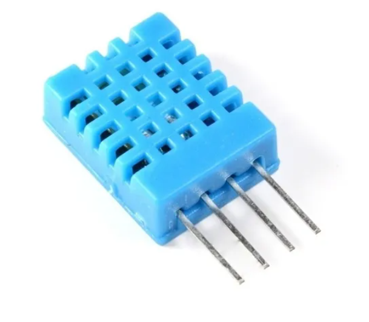
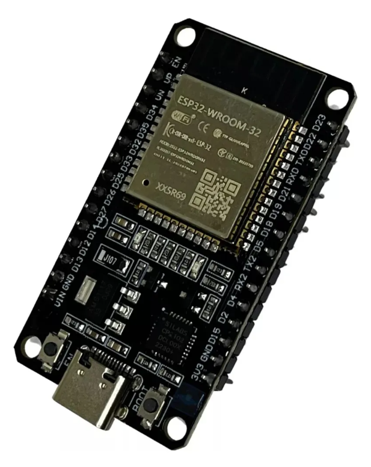
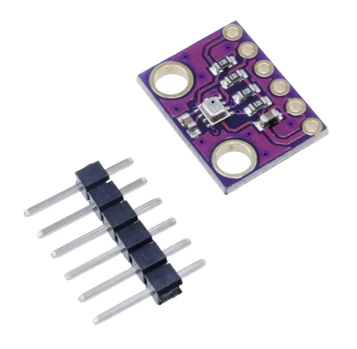
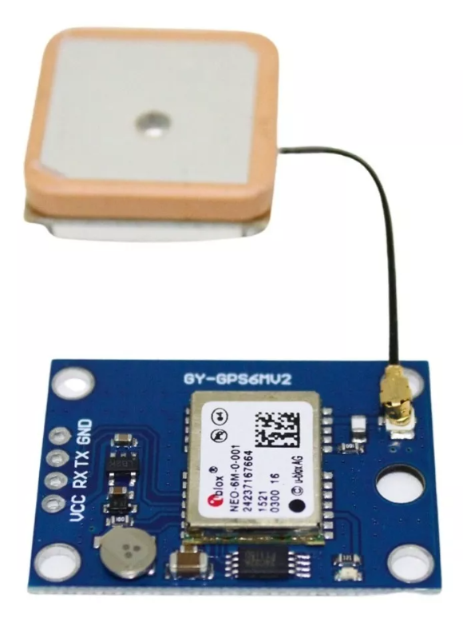
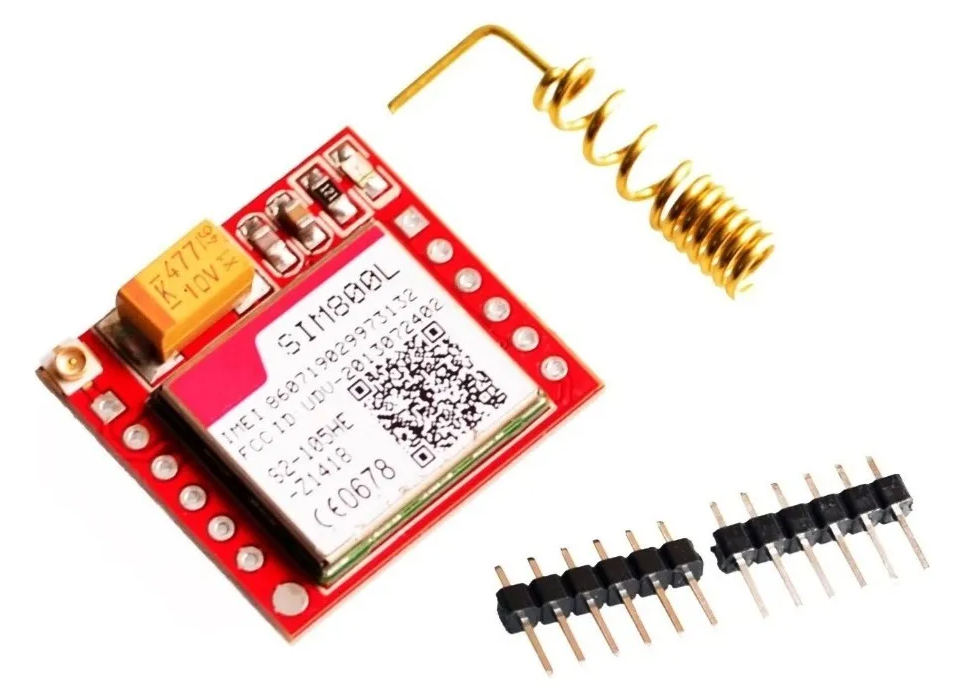
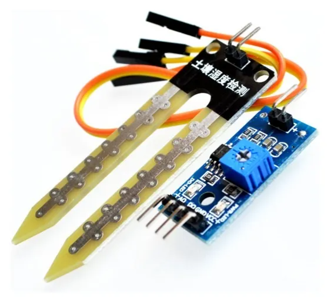
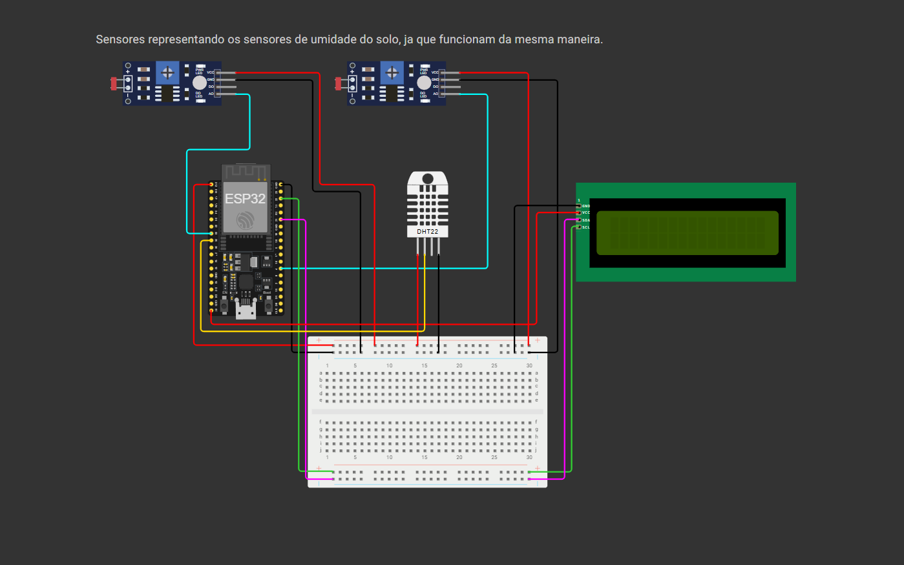

O problema
Nossa principal preocupação é a perda de vidas causada pela falta de informação. Se as pessoas soubessem com antecedência sobre a possibilidade e a gravidade de enchentes, poderiam evacuar as áreas de risco de forma segura e planejada, evitando tragédias.
Além disso, queremos devolver a tranquilidade ao dia a dia das comunidades afetadas. Após os recentes desastres no Rio Grande do Sul, muitos moradores vivem em constante estado de alerta e ansiedade, sentindo medo até mesmo diante de uma simples chuva. Acreditamos que, ao fornecer informações precisas e em tempo real sobre as condições ambientais, podemos ajudar essas pessoas a viverem com mais segurança e menos medo.
Para os órgãos de segurança pública, nossa solução também representa um avanço: com dados detalhados sobre cada localidade, será possível priorizar ações e recursos de forma mais eficiente, atuando onde houver maior risco e necessidade.
As tecnologias utilizadas
Nosso dispositivo é composto por uma placa controladora (SBC), como Arduino ou ESP32, equipada com dois sensores de umidade do solo, um sensor barométrico (BMP280), um módulo de GPS (Neo-6M), um módulo de internet celular (SIM800L) e um sensor de temperatura e umidade (DHT11). Todo o conjunto é alimentado por baterias recarregáveis e de fácil substituição, garantindo autonomia por vários meses devido ao baixo consumo de energia. Os componentes são protegidos por uma caixa impressa em 3D, projetada para facilitar o transporte e resistir às condições do ambiente externo.
Todos os dados coletados pelos sensores são enviados automaticamente para a nuvem, onde são processados por algoritmos avançados e inteligência artificial. Esse processamento permite prever possíveis catástrofes naturais e acionar alertas para os órgãos de segurança pública, além de possibilitar o envio de notificações automáticas para as populações em áreas de risco.
Para garantir a segurança e a disponibilidade das informações, nosso sistema pode operar em um servidor próprio ou utilizar serviços de grandes provedores de banco de dados, como AWS, Oracle ou Google Cloud, assegurando escalabilidade e confiabilidade no monitoramento e na resposta a desastres.
DHT11
ESP32
BMP280
Neo-6M
SIM800L
HL-69
Protótipo/Simulação
Os objetivos
Para atingirmos nosso objetivo de salvar o maior número possível de vidas diante de futuros desastres naturais, é fundamental investir na coleta e análise de dados ambientais. Quanto mais informações tivermos, melhor poderemos compreender e antecipar os riscos, permitindo uma atuação preventiva e eficiente. Dessa forma, conseguimos comunicar e alertar as pessoas em áreas de risco com antecedência, oferecendo a elas a oportunidade de se protegerem e reduzindo significativamente o impacto desses eventos em suas vidas.
O público-alvo
Nosso público-alvo são as pessoas que vivem em áreas de risco, pois são elas que mais se beneficiarão com a nossa solução. No entanto, a aquisição do dispositivo será realizada principalmente por órgãos de segurança pública, que utilizarão a tecnologia para proteger e alertar essas comunidades de forma mais eficiente e preventiva.
Os benefícios
Mais tranquilidade para quem vive em áreas de risco: com nossos dispositivos monitorando continuamente o ambiente ao redor de sua casa, você será avisado com antecedência sobre qualquer possibilidade de desastre natural. Assim, não será mais necessário viver com medo toda vez que chover, pois a informação e o alerta chegarão a tempo de garantir sua segurança e de sua família.
Como a solução ajudará no dia a dia
É nesse contexto que nosso dispositivo faz a diferença, fornecendo informações detalhadas e em tempo real sobre o ambiente. Compacto e fácil de instalar no solo, ele monitora continuamente a umidade do terreno e do ar, a temperatura, a pressão atmosférica e a localização geográfica via GPS. Todos esses dados são transmitidos automaticamente por conexão 4G para um servidor, onde são analisados por algoritmos avançados. Com isso, é possível prever inundações e estimar seu nível de severidade com maior antecedência e precisão, permitindo que alertas sejam enviados rapidamente para as pessoas em áreas de risco e para os órgãos responsáveis, aumentando as chances de prevenção e proteção.